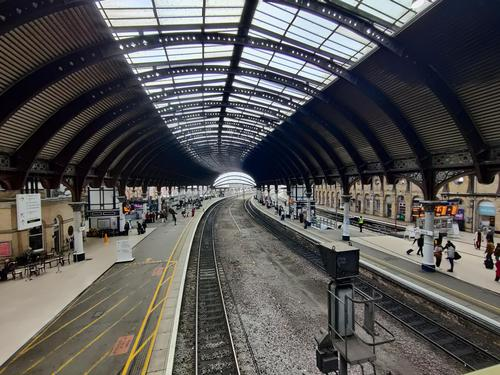

Welcome to our March blog. This month we
have a spring colour theme and the appearance of the early Spring snowdrops which, although they look delicate, are
remarkably hardy plants. The windy, changeable weather animation has been scripted from first principles.
All the graphic designs this month have used scalable vector graphics including paths, which I really enjoy using
as these give far more flexibility to create your own tailored design.
This will (hopefully) be the last month we will be running the blog on the usual web address, as next year's blog will have a new web address
which I will inform everyone of soon. I will also put an alert message on this site to redirect you when the time comes.
It has been good fun and a great start to run this as a static html/css site this year but there are better ways of building websites
which provide more functionality. One of these is REACT and this is used by the majority of web designers now.
The Remodelling of the Ensuite Bathroom reaches its rightful conclusion
Since arriving at this house in Northern Cumbria 3 years ago we have each year undertaken up to a couple of house improvement projects.
This year it has been the turn of the ensuite bathroom and the study/home office to have an upgrade. We did not use the bath in the ensuite bathroom, so it was not making the most use of this room and
we have a bath, should anyone want to use one, upstairs. So it was decided to remove the bath and fit a large walk-in shower and add some built
in storage units.
Winters here are long and extend well into the latter part of April so it has been decided that this period between the New Year and middle of April is the best time
for undertaking house renovation work and today the remodelling of the ensuite bathroom reached its conclusion. We are very pleased with the result...(see photos below)
The fitted furniture for the study is arriving in early April, so the electricians have been in to fit LED recessed roof lights in there and installed 3 additional
sockets. We have also had an additional cooker extractor hood fitted in the kitchen at the same time, so one day there were 6 workmen and
4 vans on site!
 Ensuite bathroom - BEFORE
Ensuite bathroom - BEFORE
 Ensuite bathroom - AFTER (1)
Ensuite bathroom - AFTER (1)
 Ensuite bathroom - AFTER (2)
Ensuite bathroom - AFTER (2)
 Ensuite bathroom - AFTER (3)
Ensuite bathroom - AFTER (3)
 Ensuite bathroom - AFTER (4)
Ensuite bathroom - AFTER (4)
 Lennie trying out the new
Lennie trying out the new
shower recess for shampoo
and soap
Elena has an enjoyable weekend away in Yorkshire with a friend, visiting York and Whitby
Arrival in York was the Friday, and having navigated the rather busy and complicated York station, which was the meeting point, it was time for lunch at the very pleasant restaurant Partisan.
Then it was off to have a look round York including ambling through the Shambles, and past the York Ghost Merchants where there was a very long queue,
and the Lucky Cat shop before having a walk on the old York City wall. Finally it was on to to the Viking Museum Jorvik, which remains one of the top attractions in York.
On Saturday, it was time for a visit to the North Yorkshire seaside town of Whitby, above which the ruined, gothic Whitby Abbey stands, which was apparently Bram Stoker's inspiration for Dracula.
There were lots and lots of seagulls....!
Sunday was a visit to Brodsworth Hall before an early afternoon departure back home.
Arriving at York railway station,
.. it is very easy to get lost!
 Very pleasant lunch at York
Very pleasant lunch at York
in Partisan
 Golden Fleece Pub
Golden Fleece Pub
(England's most haunted inn, with several resident ghosts)
 Wandering along the Shambles, York
Wandering along the Shambles, York
where lots of people were queueing
to see the ghosts at the York Ghost Merchants
 York's Lucky Cat Shop
York's Lucky Cat Shop
one of the eclectic independent York shops
 York Minster
York Minster
 Went for a walk around
Went for a walk around
the walls at York...
 Wandering down the very steep path from
Wandering down the very steep path from
Whitby Abbey towards the harbour at Whitby
 Visited Whitby Abbey
Visited Whitby Abbey
(well, the shop mainly...)
 ..and had a walk along the coast
..and had a walk along the coast
 There were many seagulls...
There were many seagulls...
 Even a cottage named after them...
Even a cottage named after them...
Saturday, 16th March 2024
Belated mother's day outing for lunch at Alexandros, Greek restaurant in Carlisle (and to buy some Easter eggs)
Elena had been away for official mother's day the previous week, as it was the only time available to them, so it had been agreed
in advance that mother's day would be postponed for a week this year. This worked well as it also avoided all the crowds and busy restaurants for mother's day itself.
This year, we were going out to Alexandros.
This is a popular Greek restaurant which the food critic Jay Rayner wrote about recently .
3 of us decided on the Greek Mezes which is a sharing platter
of 3 courses (you have to have at least 2 people at the table ordering this menu). There were a huge range of starters, all beautifully made and served. We were very full by the time we had finished all the starters,
but found room for mains which included mixed souvlaki (traditional pork and chicken kebabs) and lamb moussaka together with Greek salad. Finally there were a selection of 3 desserts from the dessert menu .
We all agreed that this was the best meal we had eaten out in a long time. We have not tended to visit Greece, but the food reminded us very much of the food when we were
walking in the Troodos mountains in rural Cyprus many years ago. We will definitely be back to this restaurant.
Afterwards, it was time to take the opportunity to go for a walk in Rickerby Park
On our return home, it was time to make the home-made Simnel cake, a team-effort between Elena, Bernard and Jill. This was in order that we could take it down with us to the funeral to cheer ourselves up. It proved very popular...
 First of all to Castle Chocolates, where Elena and Harry could choose Easter eggs
First of all to Castle Chocolates, where Elena and Harry could choose Easter eggs
 Past the elderly stray cat, which is kindly
Past the elderly stray cat, which is kindly
looked after by the local pet shop in Carlisle
 Then on to the popular Greek restaurant Alexandros ...
Then on to the popular Greek restaurant Alexandros ...
 Jill and Elena awaiting lunch...
Jill and Elena awaiting lunch...
 Inside Alexandros
Inside Alexandros
 Meze starters including; courgette fritters, and Dolmades (stuffed vine leaves and cabbage, with lamb mince)
Meze starters including; courgette fritters, and Dolmades (stuffed vine leaves and cabbage, with lamb mince)
 ...and more starters including; Spicy Butter Beans in tomato and chilli sauce with Greek sausage...
...and more starters including; Spicy Butter Beans in tomato and chilli sauce with Greek sausage...
 Afterwards, it was time for a walk in Rickerby Park
Afterwards, it was time for a walk in Rickerby Park
 Jill, having just crossed the river,
Jill, having just crossed the river,
Rickerby Park
 Home-made Simnel Cake
Home-made Simnel Cake
 Elena holding home-made Simnel Cake
Elena holding home-made Simnel Cake
Wednesday, 20th March 2024
Safely back home after being away for Bernard's mum's funeral...
We returned safely from the South of England after a long drive, and the almost invariable these days, motorway closure leading to an interesting diversion...
However, we made it back safely and tomorrow we will be collecting Lennie from the cattery for his return home.
The funeral service was thoughtfully put together and there was a good turn out, which was great. Thanks to all who participated and/or sent their condolence-messages.
 Lennie, suitably attired, in a black ribbon,
Lennie, suitably attired, in a black ribbon,
ready for the funeral...
 Unfortunately, Lennie has had to go
Unfortunately, Lennie has had to go
into the cattery....
 He is not really happy, obviously...
He is not really happy, obviously...
but soon settles down